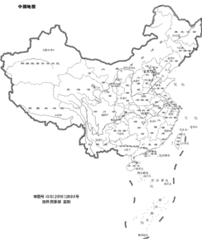

实际生产重心：东北是豆1供给核心
示意图按实际主产省定位；圆点表示重点程度，不表示行政区精确边界。2024年黑龙江、内蒙古大豆产量分别为905.0和248.1万吨。

黑龙江 905.0万吨 内蒙古 248.1万吨 吉林 山东 河南 安徽 湖北 四川东北春大豆区黑龙江、内蒙古东部、吉林：规模最大，天气与新粮上市对豆1影响最直接。
黄淮海夏大豆区安徽、河南、山东：麦后夏播，生育期短，7—8月高温干旱和渍涝关键。
长江流域与西南区湖北、湖南、四川等：种植制度更复杂，春、夏、秋播并存。
数据来源：黑龙江省统计局《2024年国民经济和社会发展统计公报》；内蒙古自治区统计局《2024年国民经济和社会发展统计公报》。地图来源：自然资源部标准地图服务，审图号 GS（2016）2893号，自然资源部监制；本站仅在网页层叠加数据标记，未修改标准地图边界。
全国大豆产量走势
2022年扩种后，产量回到2000万吨以上；2025年为2091万吨。
来源：国家统计局历年国民经济和社会发展统计公报、年度经济运行发布；单位：万吨，自然年。2025年数据见国家统计局。
主产省集中度
2023年省级产量结构。前十省合计约占全国84.5%以上。
黑龙江约43.4%
内蒙古约11.9%
其余前十主产省四川、安徽、河南、吉林、山东、江苏、湖北、湖南约24.8%
其他省区约19.9%
来源：国家统计局分省年度数据；集中度与主产省排序据国家统计局数据整理。黑龙江占比采用“稳定在43%以上”、黑龙江与内蒙古合计“54%以上”、前十省“84.5%以上”的公开统计特征作近似展示，饼图用于呈现集中度，不替代精确省级平衡表。
分产区生长季与上市窗口
同一月份，不同产区可能处于完全不同阶段；天气交易先定位产区，再定位生育阶段。
3月
4月
5月
6月
7月
8月
9月
10月
11月
东北春大豆
整地
播种出苗
苗期
开花
结荚鼓粒
成熟
收获上市
黄淮海夏大豆
麦后播种
苗期
开花结荚
鼓粒成熟
收获上市
西南夏大豆/套作
播种
苗期
开花结荚
鼓粒
成熟
收获
播种/整地营养生长开花结荚鼓粒成熟收获
交易提示：东北7—8月重点看开花、结荚和鼓粒期水热；黄淮海6月看麦后抢墒播种，7—8月看高温、干旱与渍涝；9—10月共同关注早霜、连雨、倒伏和收获损失。
来源：农业农村部《大豆机械化生产技术指导意见》、农业农村部种植业管理司/全国农技推广中心《全国大豆玉米带状复合种植技术模式图》。窗口为典型区间，具体日期随纬度、品种熟期、前茬和当年天气变化。